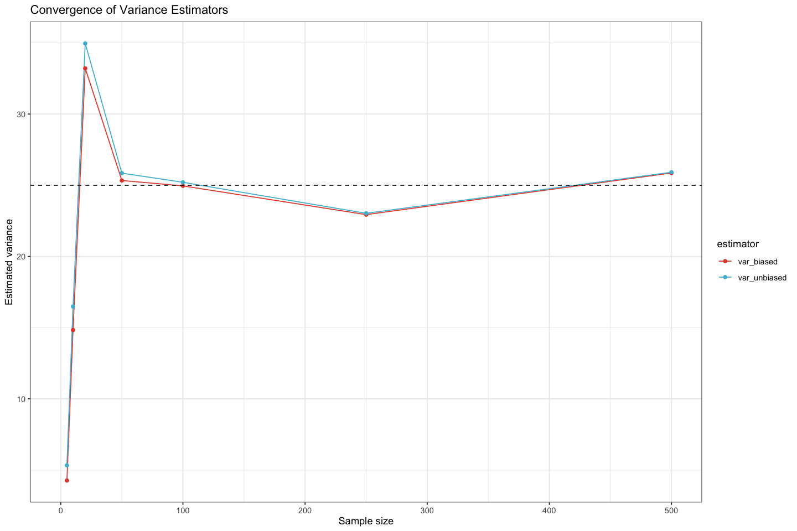

── Attaching core tidyverse packages ──────────────────────── tidyverse 2.0.0 ──
✔dplyr 1.1.4 ✔readr 2.1.5
✔forcats 1.0.0 ✔stringr 1.5.1
✔ggplot2 3.5.2.9002✔tibble 3.3.0
✔lubridate 1.9.4 ✔tidyr 1.3.1
✔purrr 1.1.0
── Conflicts ────────────────────────────────────────── tidyverse_conflicts() ──
✖dplyr::filter() masks stats::filter()
✖dplyr::lag() masks stats::lag()
ℹ Use the conflicted package (<http://conflicted.r-lib.org/>) to force all conflicts to become errors
Attaching package: ‘data.table’
The following objects are masked from ‘package:lubridate’:
hour, isoweek, mday, minute, month, quarter, second, wday, week,
yday, year
The following objects are masked from ‘package:dplyr’:
between, first, last
The following object is masked from ‘package:purrr’:
transpose
Attaching package: ‘kableExtra’
The following object is masked from ‘package:dplyr’:
group_rows
Setup complete (packages loaded: tidyverse, data.table, ggsci, moments, knitr, kableExtra).
3 Independence vs. Zero Correlation
Independence means no influence between events, while correlation measures linear relationship strength.
Independence implies zero correlation, but zero correlation does not imply independence.
E.g., \(X\) and \(Y = X^2\) have zero correlation but are not independent.
# ---- Zero Correlation but NOT Independence: Y = X^2 ----# Idea: X ~ N(0,1); define Y = X^2. Then cor(X,Y) ~ 0 (symmetry cancels linear relation),# yet Y is a deterministic function of X so they are NOT independent.set.seed(2025)n <-5000X <-rnorm(n)Y <- X^2r_xy <-cor(X, Y)cat(sprintf("Sample correlation cor(X, Y=X^2) = %.4f (near 0)\n", r_xy))
We got \(\rho_{X,Y}=0.0198\). It seems to be close to zero, but we need a statistical test to confirm this formally.
→ Test for significance of the correlation coefficient
cor.test(X, Y)
Pearson's product-moment correlation
data: X and Y
t = 1.4027, df = 4998, p-value = 0.1608
alternative hypothesis: true correlation is not equal to 0
95 percent confidence interval:
-0.007887062 0.047529726
sample estimates:
cor
0.01983657
üí° Q: Based on the output of cor.test, what is the p-value for the correlation test? What can you conclude about the correlation between the two variables? Are \(X\) and \(Y\) independent? Write your answer in the cell below.
A: [Type your answer here]
Distinguish the two expressions:
correlation coefficient equals zero ❌
correlation coefficient (statistically) indifferent from zero ✅
Now let’s visualize \(Y=X^2\) by plotting the scatter plot.
library(ggplot2)options(repr.plot.width =8, repr.plot.height =7)scatter_df <-data.frame(X = X, Y = Y)p1 <-ggplot(scatter_df, aes(X, Y)) +geom_point(alpha =0.25, color ='#2c7fb8') +annotate('text', x =min(X)+0.2, y =max(Y)*0.95,label =paste0('cor = ', sprintf('%.3f', r_xy)),hjust =0, size =4) +labs(title ='Zero Linear Correlation but Nonlinear Dependence',subtitle ='Y = X^2 with X ~ N(0,1)',x ='X', y ='Y = X^2') +theme_minimal()print(p1)
The following figure shows the scatter plot of two assets with various correlation coefficients.
4 Descriptive Statistics on Asset Returns
# ---- Load Asset Returns Data ----asset_df <-read_csv("https://raw.githubusercontent.com/my1396/FIN5005-Fall2025/refs/heads/main/data/asset_returns.csv")print("Preview: first 6 rows of asset returns data frame:")head(asset_df) %>%round(2)
[1] "Preview: first 6 rows of asset returns data frame:"
A tibble: 6 × 3
Asset_A
Asset_B
Asset_C
<dbl>
<dbl>
<dbl>
17.89
4.31
9.94
10.30
4.17
10.55
20.87
14.16
6.61
18.21
22.33
9.58
17.49
2.23
10.23
29.87
15.72
8.97
We define a summary statistics function to compute the statistics of interest.
quick_summary <-function(x) {# Function to compute basic descriptive statisticsdata.frame(n =length(x),mean =mean(x),sd =sd(x),var =var(x),skewness = moments::skewness(x),kurtosis = moments::kurtosis(x),row.names =NULL )}
The summary statistic table is generated as follows:
Plot the histograms of the asset returns to visualize their distributions.
# ---- Visualization: Histograms with Normal Density Overlay ----# Convert to long formcombined <- asset_df %>%pivot_longer(cols =everything(), names_to ="type", values_to ="value")# Compute per-type mean & sd and create normal curve pointsnorm_params <- combined %>%group_by(type) %>%summarise(mu =mean(value), sigma =sd(value), .groups ='drop')norm_curve <- norm_params %>%group_by(type) %>%do({ mu <- .$mu; sigma <- .$sigma x <-seq(mu -4*sigma, mu +4*sigma, length.out =400)tibble(value = x, density =dnorm(x, mu, sigma))})options(repr.plot.width =15, repr.plot.height =6)ggplot(combined, aes(value)) +geom_histogram(aes(y =after_stat(density)), bins =40, fill ="#3182bd", alpha =0.8, color ="white") +geom_line(data = norm_curve, aes(value, density), color ="red", linewidth =0.8) +facet_wrap(~ type, scales ="free", nrow =1) +labs(title ="Distribution Contrast with Normal Overlay",subtitle ="Red curve = fitted normal using sample mean & sd per asset",x ="Value", y ="Density") +theme(panel.spacing.x =unit(1.2, "lines"))
üí° Q: Answer the following questions based on the summary statistics and the distribution plots:
Which asset has the highest mean return?
Which asset is the most risky? and which one has the most stable returns?
Which asset shows the positive skewness and what does it mean?
If an investor prefers assets with low risk and return distributions with tails close to normal, which asset is most appropriate?
Based on mean and standard deviation, which asset has the best risk–return trade-off (highest mean per unit of risk)?
A: [Type your answer here]
5 Large Sample Gives More Accurate Estimates
We have a variable \(X\sim N(0,5^2).\)
Normal distribution notation: \(X\sim N(\mu, \sigma^2)\) means that \(X\) is normally distributed with mean \(\mu\) and variance \(\sigma^2.\)
The second parameter is the variance, NOT the standard deviation.
Now we draw random samples of size 5, 10, 10, … until 5000 from this distribution and compute the sample mean and standard deviation for each sample.
For each sample, we compute the biased and unbiased sample variance
The biased sample variance is computed as \[\frac{1}{n}\sum_{i=1}^n (x_i - \bar{x})^2.\]
The unbiased sample variance is computed as \[\frac{1}{n-1}\sum_{i=1}^n (x_i - \bar{x})^2\]
# ---- Simulation: Sample vs Population variance ----set.seed(2025) # for reproducibilitytrue_var <-25# sd^2 with sd=5, true population variancesample_sizes <-c(5, 10, 20, 50, 100, 250, 500, 1000, 5000) # varying sample sizes from 5 to 500results <-lapply(sample_sizes, function(n){ x <-rnorm(n, mean =0, sd =5)data.frame("sample_size"= n, "var_biased"=mean((x -mean(x))^2), "var_unbiased"=var(x))}) %>% dplyr::bind_rows()cat('Variance estimators: var_n (biased, divide by n) vs var_n1 (unbiased, divide by n-1).\n')results
Variance estimators: var_n (biased, divide by n) vs var_n1 (unbiased, divide by n-1).
A data.frame: 9 × 3
sample_size
var_biased
var_unbiased
<dbl>
<dbl>
<dbl>
5
4.262707
5.328384
10
14.832929
16.481032
20
33.210505
34.958426
50
25.332410
25.849398
100
24.957059
25.209150
250
22.936725
23.028840
500
25.862610
25.914439
1000
25.574182
25.599782
5000
25.301658
25.306719
üí° Q: Based on the variance estimates for different sample sizes:
As the sample size increases, how do the sample variance estimates compare to the true variance \(25\)?
Does the sample variance converge to the true variance as the sample size increases?
What is the difference between the biased and unbiased sample variance estimators?
A: [Type your answer here]
# ---- Plot: Convergence of variance estimators ----results_long <- results %>% tidyr::pivot_longer(var_biased:var_unbiased, names_to ="estimator", values_to ="value") %>% dplyr::mutate(estimator = dplyr::recode(estimator, var_n ="Divide by n", var_n1 ="Divide by n-1"))options(repr.plot.width =12, repr.plot.height =8)ggplot(results_long, aes(sample_size, value, color = estimator)) +geom_line() +geom_point() +scale_color_npg() +geom_hline(yintercept = true_var, linetype ="dashed") +xlim(c(0,500)) +labs(title ="Convergence of Variance Estimators", y ="Estimated variance", x ="Sample size")
Warning message:
“Removed 4 rows containing missing values or values outside the scale range
(`geom_line()`).”
Warning message:
“Removed 4 rows containing missing values or values outside the scale range
(`geom_point()`).”

6 Correlated Asset Returns
We will simulate repeated samples of two (correlated) asset return series and compare the sampling distributions of their sample means and the distribution of the portfolio mean (equal weights).
# ---- Load Correlated Asset Returns Data ----X_demo <-read_csv("https://raw.githubusercontent.com/my1396/FIN5005-Fall2025/refs/heads/main/data/correlated_asset_returns.csv")colnames(X_demo) <-c("Asset_A", "Asset_B") # Rename columns for clarityX_demo %>%as.data.table() %>% .[, lapply(.SD, function(x) if (is.numeric(x)) round(x, 4) else x)] %>%print(digits =4)
Plot the scatter plot of the two asset returns to visualize their relationship.
options(repr.plot.width =8, repr.plot.height =7)ggplot(X_demo, aes(Asset_A, Asset_B)) +geom_point(alpha =0.35, color ='#1b7837')
üí°Q: What is the correlation between the two asset returns? How do their prices move together?
A: [Type your answer here]
Exercise
Following the steps below, you will compute the mean and standard deviation of the two asset returns, construct a portfolio, and analyze its properties.
Step 1: Calculate the standard deviation of Asset A and B returns, respectively.
Step 2: Construct a equally weighted portfolio of the two assets. Calculate the portfolio returns. \[
E[r_p] = \frac{1}{2} (E[r_A] + E[r_B])
\]
Step 3: Calculate the standard deviation of the portfolio returns, \(\text{sd}(r_p)\).
Step 4: Calculate the average of the volatility of Asset A and B (using results in Step 1). Compare it with the volatility of the portfolio returns.
6.1 Reflection
How does correlation between assets influence the portfolio mean’s variability? Write 3–4 sentences interpreting for a diversified vs concentrated investment decision.